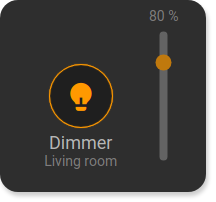
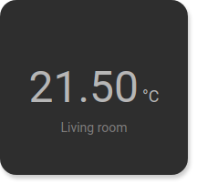
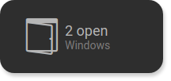
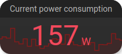
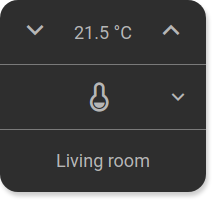
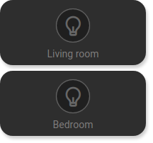
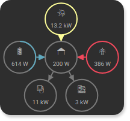

Caution
This is the documentation for the current development branch of the CometVisu. It is possible that some of the described features are not yet available in the current release.
Also there might be lots of errors in this documentation as some parts of the content have been translated by an online translation service.
Basic structure
On the top level a tile file contains a meta section (<cv-meta>) with invisible settings that are needed for this configuration file
(e.g. connections to backends, loading additional files etc.).
The visible part is divided into a <header> (top), a <main> (the actual content) and a <footer> (bottom) section.
The header and footer are optional and can be used for global content like navigation bars or widgets that show a global
status like the number of open windows or the lights that are turned on.
<config>
<cv-meta>
<!-- not visible configuration elements -->
</cv-meta>
<header>
<!-- optional top content -->
</header>
<main>
<!-- main content including optional sidebars -->
</main>
<footer>
<!-- optional bottom content -->
</footer>
</config>
In the <main> section the content is displayed in tiles that are arranged in pages (<cv-page>).
For frequently used things the tile-structure already provides tiles with predefined content (called widgets).
The switch-widget for example contains a button in the middle cell and centered text in the row below.
Meta section
The meta section (<cv-meta>) contains all settings that are needed for this configuration file.
This includes connections to the backends, mappings,
stylings and loaders.
<cv-meta>
<cv-backend type="openhab" uri="/rest/" />
<cv-backend name="si" default="true" type="simulated"/>
<cv-backend name="mqtt" type="mqtt" uri="ws://mqtt:9001/"/>
<cv-mapping name="light">
<entry value="0">ri-lightbulb-line</entry>
<entry value="1">ri-lightbulb-fill</entry>
</cv-mapping>
<cv-mapping name="speaker">
<entry value="0">ri-speaker-line</entry>
<entry value="1">ri-speaker-fill</entry>
</cv-mapping>
<cv-styling name="WindowOpen">
<entry range-min="1">red</entry>
</cv-styling>
<cv-mapping name="PlayProgress">
<formula>y = Math.round(100/store.get('duration')*x)</formula>
</cv-mapping>
<cv-styling name="button">
<entry value="0">inactive</entry>
<entry range-min="1">active</entry>
</cv-styling>
<cv-loader type="css" src="resource/config/media/example.css" />
<cv-loader type="js" src="resource/config/media/example.js" />
<cv-loader type="templates" src="resource/config/media/my-templates.xml" />
</cv-meta>
Navigation / Page structure
In addition to the actual page content, there are fixed areas that are always visible regardless of which subpage you are currently on. There are header and footer areas and a left and right sidebar. The main area then contains the individual pages with their respective content (tiles) between which you can navigate back and forth. The fixed areas are all optional and can be used or omitted as required. You can use them, for example, for navigation bars or widgets that show global status, such as the number of open windows or the number of lights on.

Basic structure with all optional areas available
<header>
<h1>Header section</h1>
</header>
<main>
<aside>
<h1>Left sidebar</h1>
</aside>
<cv-page id="start">
<h1>Page contents</h1>
</cv-page>
<aside>
<h1>Right sidebar</h1>
</aside>
</main>
<footer>
<h1>Footer section</h1>
</footer>
The <main> section is not optional and must always be present.
Any number of Pages can be specified within this area.
A page can contain widgets, groups and other pages. Through this nesting
you can define a navigation structure. For example, you can specify a page for each floor, which in turn
contains a page for each room on this floor.
<main>
<cv-page id="eg" name="Ground floor">
<cv-page id="ez" name="Dining room" />
<cv-page id="wz" name="Living room" />
<cv-page id="ku" name="Kitchen" />
<cv-page id="bad" name="Bathroom" />
</cv-page>
<cv-page id="og" name="First floor">
<cv-page id="sz" name="Bedroom" />
<cv-page id="kz1" name="child's room 1" />
<cv-page id="kz2" name="child's room 2" />
<cv-page id="badOg" name="Bathroom" />
</cv-page>
</main>
A navigation menu is automatically created from this structure. These can be integrated anywhere (usually in the header or footer section).
<header>
<nav>
<cv-menu model="pages"/>
</nav>
</header>
In the <header>/<footer> sections, a breadcrumb menu can also be added with <cv-breadcrumbs/>.
This allows you to quickly jump back to higher-level pages.
<header>
<cv-breadcrumbs/>
</header>
Widgets
A widget is a tile with one or more components that provides a specific function. This means that common use cases within a smart home can be covered, such as light switches or operating a roller shutter.
The switch widget simple switch, button or trigger |
|
|  | The dimmer widget Switch with additional slider to set a percentage |

|
The shutter widget Button for up/down/stop to control a shutter |
|  | The info widget Representation of a value in different ways |
|  | The status widget Status display at half tile height |
The small status widget Status display in button size |
|
|  | The status-chart widget Status widget with chart in the background |
|  | The RTC widget Room temperature control with settings for HVAC and a set point temperature |

|
The media-player widget Control a media player with start/stop, next & previous and a volume control |
|  | The widget-pair Allows two tiles to be displayed at half height |
|  | The energy widget Visualizes energy flow inside a house |
{kind=link}
{kind=link}
{kind=link}
{kind=link}
{kind=link}
{kind=link}
{kind=link}
{kind=link}
{kind=link}
Define own widgets
If the existing widgets are not sufficient, you can also define your own widgets. The definition
of a new widget takes place in a <cv-widget> element. This consists of the actual content element
<cv-tile> and an optional <header> and <footer> element.
The content in the tiles is arranged in a maximum of 3 rows with 3 columns each, similar here
how in tables a content element can occupy several rows and/or columns.
The components provided by the tile structure can be freely placed within the cells of a tile. Examples of these components include simple text, a Button, Image or more complex display elements like Lists.
The easiest way is to first create a tile with all the components you need in the desired locations in its normal configuration file. This is the best way to test appearance and functionality. The following example shows a tile in which a round progress bar and a text is displayed.
<cv-widget>
<cv-tile>
<cv-row colspan="3" row="2">
<cv-value format="%d%%">
<cv-address transform="OH:number" mode="read" backend="si">Test_Value</cv-address>
<cv-round-progress class="value"/>
</cv-value>
</cv-row>
<cv-row colspan="3" row="last">
<label class="secondary">Circle Progress</label>
</cv-row>
</cv-tile>
</cv-widget>
This tile configuration must now be transferred to a template. To do this you first have to create a template file. The best way to do this is to use the Manager by creating a file called “my-templates.xml” in the “media” folder. generated. To load these templates, add a Loader to the configuration file in the meta area added.
<cv-meta>
<cv-loader type="templates" src="resource/config/media/my-templates.xml" />
</cv-meta>
Now copy everything that is between <cv-widget> and </cv-widget> into this file.
It should then contain the following content:
<templates structure="tile">
<template id="meter">
<cv-tile>
<cv-row colspan="3" row="2">
<cv-value slot-format="%d%%">
<slot name="address"/>
<cv-round-progress class="value"/>
</cv-value>
</cv-row>
<cv-row colspan="3" row="last">
<label class="secondary"><slot name="label"/></label>
</cv-row>
</cv-tile>
</template>
</templates>
Within the template definition with the id “meter” you can see the slightly modified content of the tile. The only thing that needs to be modified is content that you would like to have configurable later. Usually this includes addresses, labels and possibly some attributes such as mappings, styling and formatting.
If you now want to use this template in the configuration file, add a <cv-meter> element there.
The name comes from the template ID with the prefix cv-.
The principle of the <slot> elements is relatively simple, they serve as placeholders for elements that use this slot.
In the example there are two slot elements: one for the address of the value element: <slot name="address"/>
and one for the label: <slot name="label"/>.
This results in the following code with which you can now use the newly defined template widget.
<custom>
<cv-meter>
<cv-address slot="address" transform="OH:5.001" mode="read">1/4/0</cv-address>
<span slot="label">Circle Progress</span>
</cv-meter>
</custom>
Since self-defined template widgets are not known to the official schema of the CometVisu configuration files,
you have to wrap this into a <custom>...</custom> element so that the configuration file is not marked as invalid.
However, at this point you lose the advantage that this part of the configuration file can be checked for validity.
If you still want rely on this, the schema can also be expanded with the schema definition for your new widget.
To do this, the file “custom_visu_config.xsd” must be present in the “config/” folder.
If it does not exist, it must be created with the following basic structure.
<?xml version="1.0" encoding="UTF-8"?>
<xsd:schema xmlns:xsd="http://www.w3.org/2001/XMLSchema" xmlns:xml="http://www.w3.org/XML/1998/namespace">
<!-- uncomment the next line if you want to reference types from the main pure schema -->
<!-- <xsd:include schemaLocation="../visu_config.xsd"/> -->
<!-- uncomment the next line if you want to reference types from the main tile schema -->
<!-- <xsd:include schemaLocation="../visu_config_tile.xsd"/> -->
<xsd:group name="CustomWidgets">
<xsd:choice>
<!-- reference new widgets here, e.g.
<xsd:element name="cv-music-player" type="cv-music-player" />
-->
</xsd:choice>
</xsd:group>
<!-- add definition for new widgets here -->
<!-- <xsd:complexType name="cv-music-player">...</xsd:complexType> -->
</xsd:schema>
The complete example for the <cv-meter> widget looks like this.
<?xml version="1.0" encoding="UTF-8"?>
<xsd:schema xmlns:xsd="http://www.w3.org/2001/XMLSchema" xmlns:xml="http://www.w3.org/XML/1998/namespace">
<xsd:include schemaLocation="../visu_config_tile.xsd"/>
<xsd:group name="CustomWidgets">
<xsd:choice>
<xsd:element name="cv-meter" type="cv-meter" />
</xsd:choice>
</xsd:group>
<xsd:complexType name="cv-meter">
<xsd:sequence>
<xsd:element name="span" minOccurs="0">
<xsd:complexType>
<xsd:simpleContent>
<xsd:extension base="xsd:string">
<xsd:attribute name="slot" use="required">
<xsd:simpleType>
<xsd:restriction base="xsd:string">
<xsd:enumeration value="label" />
</xsd:restriction>
</xsd:simpleType>
</xsd:attribute>
</xsd:extension>
</xsd:simpleContent>
</xsd:complexType>
</xsd:element>
<xsd:element name="cv-address" maxOccurs="unbounded">
<xsd:complexType>
<xsd:simpleContent>
<xsd:extension base="address">
<xsd:attribute name="slot" use="required">
<xsd:simpleType>
<xsd:restriction base="xsd:string">
<xsd:enumeration value="address" />
</xsd:restriction>
</xsd:simpleType>
</xsd:attribute>
</xsd:extension>
</xsd:simpleContent>
</xsd:complexType>
</xsd:element>
</xsd:sequence>
<xsd:attribute ref="format" />
</xsd:complexType>
</xsd:schema>
The <cv-meter> widget can then be used without <custom>...</custom> and it will also be checked for validity.
Components
A component is a single visual element that is either operable (e.g. button) or just shows a value. The widgets already presented combine one or multiple components in one tile.
Miscellaneous
Other elements that are not independent components but can be used within them.